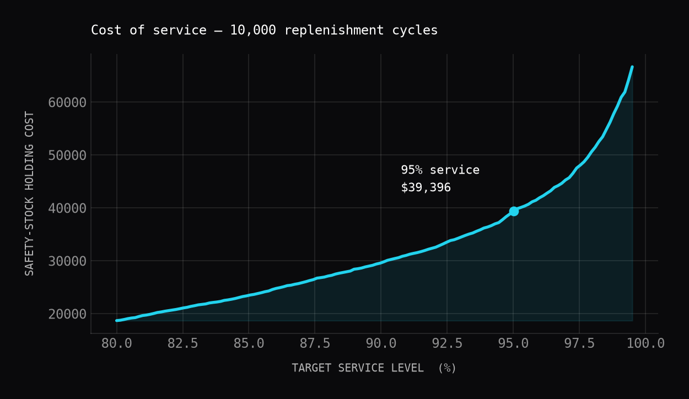
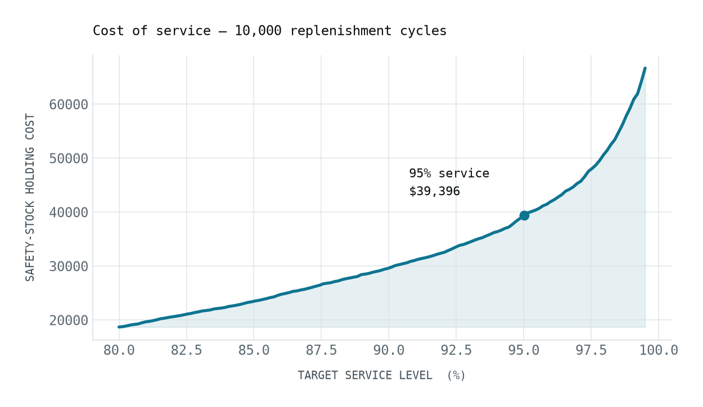

Featured project Battery Cell Risk Simulator A Monte Carlo simulation over 10,000 replenishment cycles that recommends a safety-stock policy hitting a 95% service level without over-committing cash. The curve shows how sharply stock cost climbs as the target service level nears 100%. View on GitHub